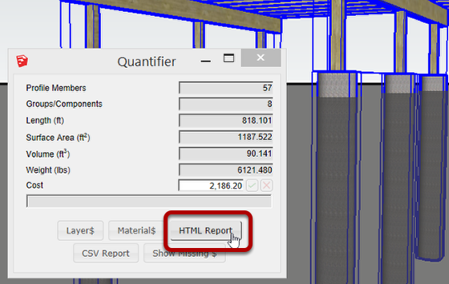
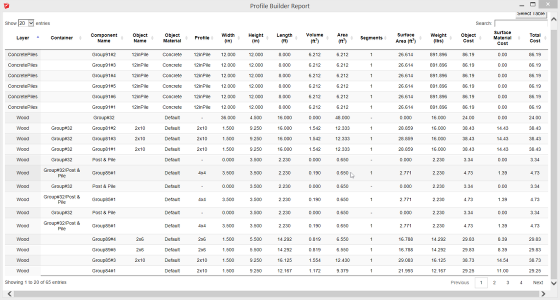

To create an HTML report, select some objects and click the HTML report button.

Sort columns by clicking the column heading.
To sort by multiple columns, hold SHIFT when clicking additional columns.
Search for a set of Objects using the Search field.
Click the 'Select Table' button to select the table so you can copy and paste it into another application such as Excel.
To export a CSV report, click the CSV Report button.
CSV reports may be opened directly by spreadsheet applications such as Excel.